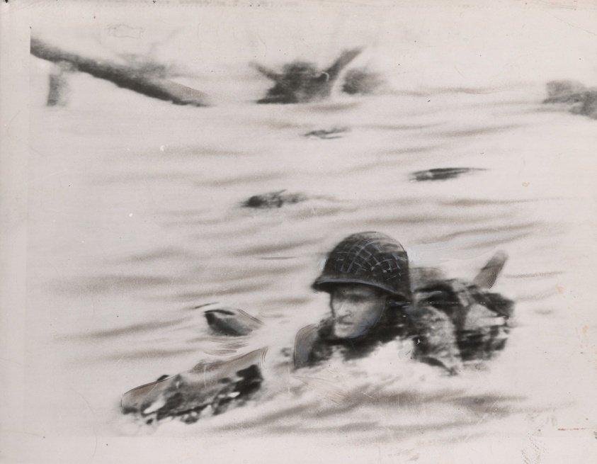

D-Day Invasion, Normandy
Robert Capa · 1944 · Gelatin silver print · 16.8 × 21.3 cm · Art Institute of Chicago
In copyright. Look and learn: shown for study, not for download.
Capa landed on Omaha Beach with the 16th Infantry Regiment on the morning of 6 June 1944, carrying two Contax II cameras. By his account he took 106 pictures; in the Life darkroom in London the dryer was set too high and melted the emulsion, and eleven frames survived. The story has been doubted since. This print was radioed to the New York Times, which ran it on 9 June, three days before Life reached the newsstands.